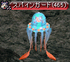
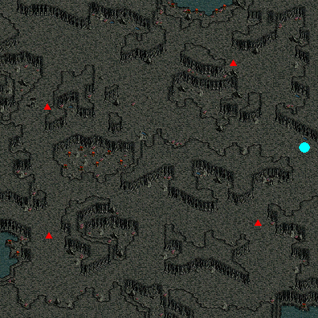
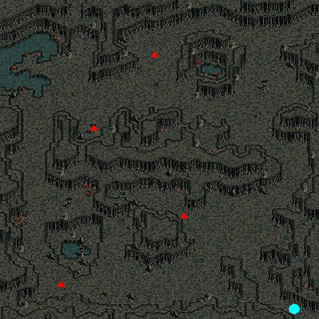
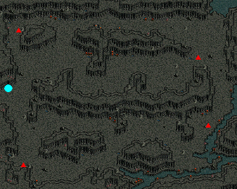
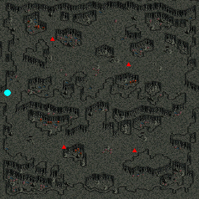
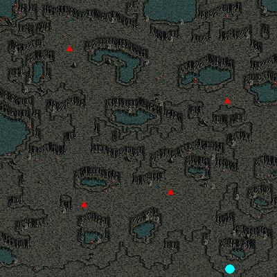
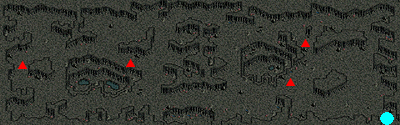
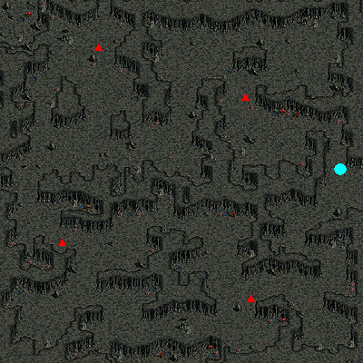
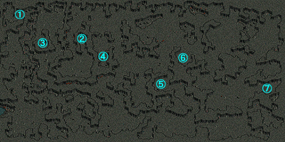

メニュー
スパインホール地下 Ｂ２へのワープ方法
特定の時間帯にスパインホール Ｂ１の スパインガード を倒すと、一定確率でＢ２へワープできる。パーティーメンバーが倒すと、同マップ内のパーティーメンバー全員がワープします。
B2から他マップへの移動ポータルは存在しない。
スパインホールB2はマップ製作者Lv4でミニマップの表示が可能です。

| スパインホール Ｂ１ | 時間帯 | ワープ先のＢ２位置 |
|---|---|---|
| １番目 | 0：00～3：26 | ① |
| ２番目 | 3：27～6：52 | ② |
| ３番目 | 6：53～10：18 | ③ |
| ４番目 | 10：19～13：44 | ④ |
| ５番目 | 13：45～17：10 | ⑤ |
| ６番目 | 17：11～20：36 | ⑥ |
| ７番目 | 20：37～0：00 | ⑦ |
１番目のスパインホール Ｂ１ Lv450～455
|  |
● ▲ |
… 移動ポータル … スパインガード |
２番目のスパインホール Ｂ１ Lv455～460
|  |
● ▲ |
… 移動ポータル … スパインガード |
３番目のスパインホール Ｂ１ Lv460～465
|  |
● ▲ |
… 移動ポータル … スパインガード |
４番目のスパインホール Ｂ１ Lv465～470
|  |
● ▲ |
… 移動ポータル … スパインガード |
５番目のスパインホール Ｂ１ Lv470～475
|  |
● ▲ |
… 移動ポータル … スパインガード |
６番目のスパインホール Ｂ１ Lv475～480
|  |
● ▲ |
… 移動ポータル … スパインガード |
７番目のスパインホール Ｂ１ Lv480～485
|  |
● ▲ |
… 移動ポータル … スパインガード |
スパインホール地下 Ｂ２ Lv485～490
|  |
① ② ③ ④ ⑤ ⑥ ⑦ |
… １番目からのワープ先 … ２番目からのワープ先 … ３番目からのワープ先 … ４番目からのワープ先 … ５番目からのワープ先 … ６番目からのワープ先 … ７番目からのワープ先 |